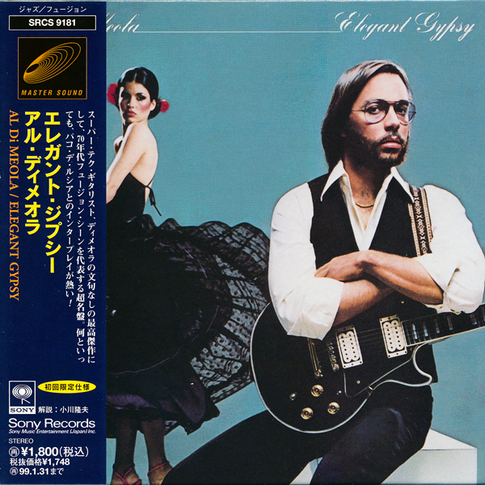

Al Di Meola- Elegant Gypsy



Género: Jazz
Año: 1976
Total de pistas: 14
Información de Producción
| Campo | Información |
|---|---|
| Año | 1976 |
| Género | Jazz |
| Total de pistas | 14 |
| Productores | Al Di Meola |
| Ingeniería | Dave Palmer (2) |
| Masterización | Bob Ludwig |
| Artwork Front Cover And Inner Sleeve Picture Concept And Direction | Al Di Meola |
| Design | Paula Scher |
| Engineer Mastering | Bob Ludwig |
| Engineer Recording | Dave Palmer (2) |
| Photography By | Bill King (12) |
| Producer, Arranged By | Al Di Meola |
Tracklist
1. Flight Over Rio [7:15]
1. Flight Over Rio [7:15]
2. Midnight Tango [6:17]
2. Midnight Tango [6:17]
3. Percussion Intro [1:10]
3. Percussion Intro [1:10]
4. Mediterranean Sundance [5:15]
4. Mediterranean Sundance [5:15]
5. Race With Devil On Spanish Highway [6:17]
5. Race With Devil On Spanish Highway [6:17]
6. Lady Of Rome, Sister Of Brazil [1:45]
6. Lady Of Rome, Sister Of Brazil [1:45]
7. Elegant Gypsy Suite [9:14]
7. Elegant Gypsy Suite [9:14]
Instrumentos y Equipos
| Tipo | Marca | Modelo | Año | Precio | Puntuación | Enlaces |
|---|---|---|---|---|---|---|
| electric_guitar | 1971 | Guitarra Flamenca Sobrinos de Domingo Esteso | 1971 | - | - | 🎛️ Equipboard |
| unknown | Conde | Hermanos Flamenco FC26 | 2025 | - | - | 🎛️ Equipboard |
| unknown | Conde | Hermanos Flamenco FC28 | 2025 | - | - | 🎛️ Equipboard |
| unknown | Pepe | Romero, Jr. Negra Flamenco | 2025 | - | - | 🎛️ Equipboard |